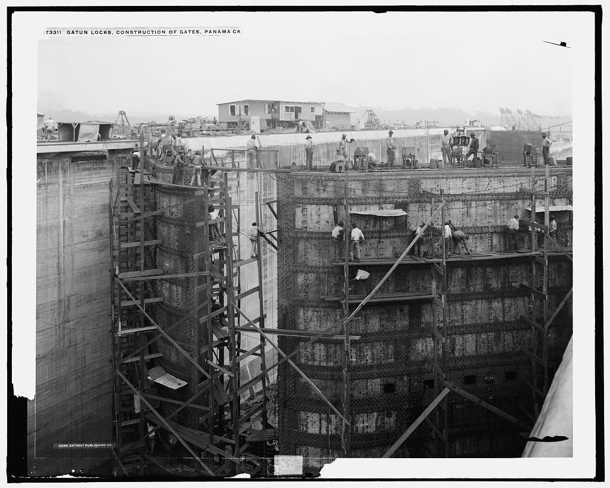
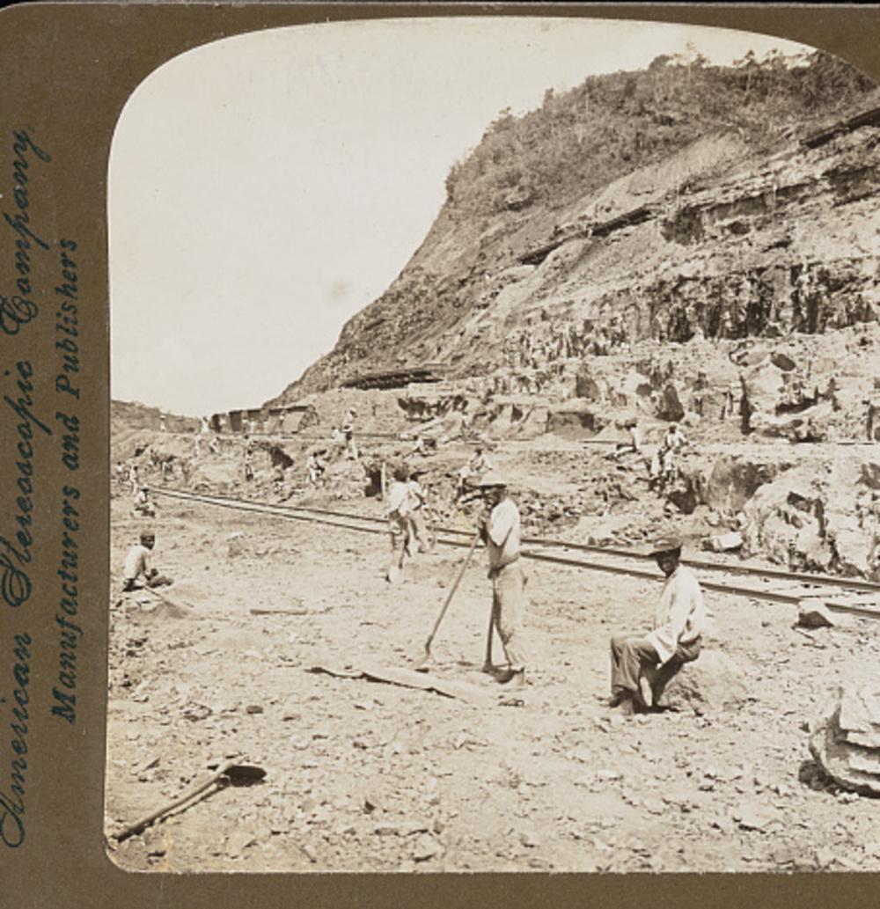
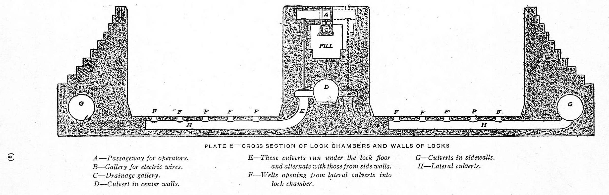
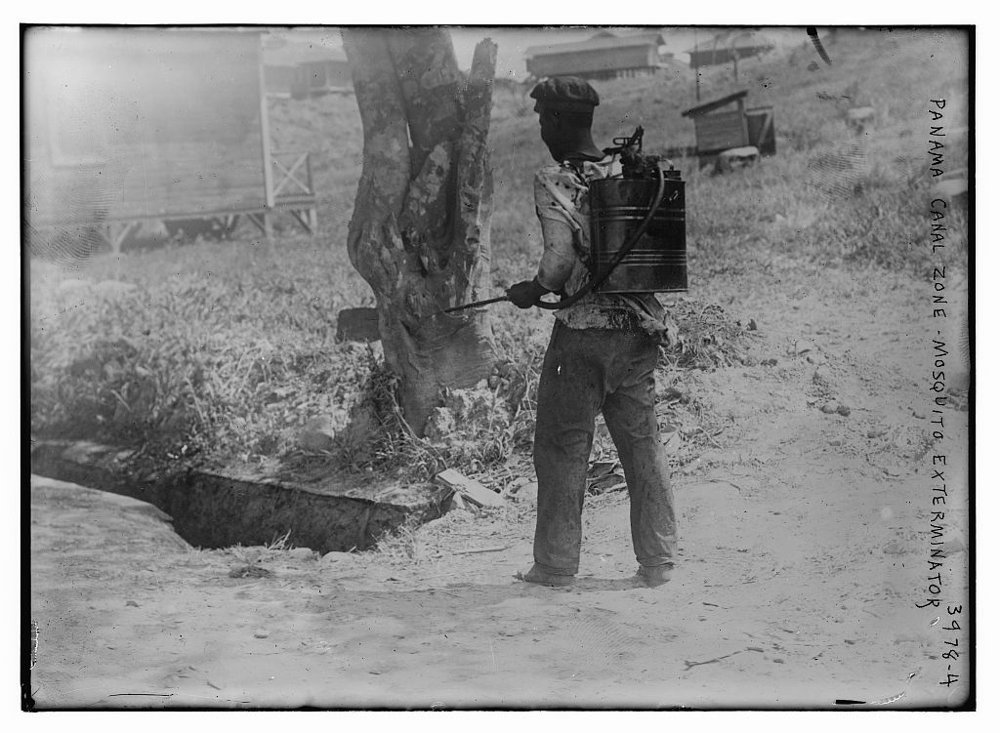

Store the lifting force
Gatun Dam created an elevated lake. Water flows through culverts into or out of each chamber without pumps in the original lock system.
1904–1914 · civil engineering · public health · labor history
The Panama Canal was not one giant ditch. It was a designed chain of lakes, dams, locks, railroads, people, and mosquito control—built across a tropical landscape and through unequal systems of power.

Read the landscape
The canal does not slice straight through at sea level. Ships rise from an ocean into Gatun Lake, cross the isthmus, then descend to the other ocean. Gravity moves the water; lock gates control it.

Gatun Dam created an elevated lake. Water flows through culverts into or out of each chamber without pumps in the original lock system.
Rain-soaked slopes repeatedly slid into Culebra Cut. Excavation was a continuing geology problem, not a one-time removal.
Railroads removed spoil, delivered concrete materials, and kept thousands of jobs connected across roughly 50 miles.
Interactive hydraulic model
A gate opens safely only when water levels match on both sides. Move the ship from the Atlantic-side approach into Gatun Lake by controlling the lower gate, valves, and upper gate in the correct order.

The chamber is low and empty. Which barrier should move first?
Water seeks the same level. Opening culverts allows gravity to equalize the chamber with the next body of water. The gates then experience little difference in water pressure and can open safely.
Public health is infrastructure
Earlier builders often blamed “bad air.” By 1904, evidence showed that different mosquitoes transmitted yellow fever and malaria. Sanitation teams treated the environment as an engineered system: remove breeding sites, block bites, and isolate cases.

Choose every measure that interrupts transmission.
Select an intervention, then explain which link it changes.
CDC’s historical review reports that the malaria death rate among employees fell from 11.59 per 1,000 in November 1906 to 1.23 per 1,000 in December 1909. Yellow fever was virtually eliminated in the Canal Zone. This did not make construction safe—landslides, blasting, trains, and unequal living conditions still killed workers.
Count people accurately
The National Archives estimates that 75,000 people worked on the U.S. canal project; the Panama Canal Authority publishes a 56,307 total for 1904–1913. Most workers came from the West Indies. The workforce was organized through a discriminatory “gold roll” and “silver roll” system that shaped pay, housing, services, and status.
Workers recruited from Barbados, Martinique, Guadeloupe, Jamaica, and other islands performed much of the dangerous manual labor. Their skill and endurance belong at the center of the construction story.
After Panama separated from Colombia in 1903, a treaty granted the United States sweeping control in the Canal Zone. Panamanians later challenged that control for generations; Panama received full control at the end of 1999.
The “gold” and “silver” rolls were officially wage systems, but in practice they largely separated white U.S. employees from West Indian and other workers, producing unequal pay and facilities.
Claim inspector
Claim: “From 1904 to 1914, 75,000 workers built the Panama Canal.”
Choose the revision that is precise about time and evidence.
A sea-level approach struggles with disease, rain, landslides, finance, and management.
Sanitation, housing, rail logistics, excavation, and design all become parts of one program.
A high-level lake and locks replace the sea-level vision.
The canal officially opens in August as war begins in Europe.
Panama assumes full administration of the canal at noon on December 31.
Synthesize